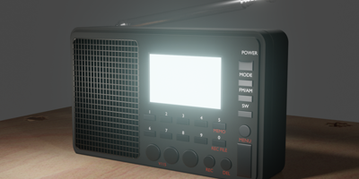
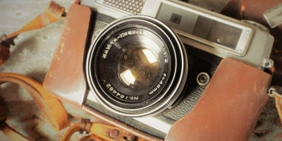

7080 Icon Design Plan
70, 80년대부터 쓰여왔던 물건이나 쓰였던 물건, 즉 우리에겐 추억의 물건으로 남을 수 있는 것들을 아이콘으로 표현하려고 했다.


Yellow -
UI/UX Design I
7080 Icon Design
70, 80년대부터 쓰여왔던 물건이나 쓰였던 물건, 즉 우리에겐 추억의 물건으로 남을 수 있는 것들을 아이콘으로 표현하려고 했다.
아이콘에 선명한 선을 사용하되 포인트 컬러를 주었다.
Point Color
Icon style
아이콘에 선명한 선을 사용하되 포인트 컬러를 주었다.